pacman::p_load(tidyverse, haven, ggrepel, patchwork,ggplot2,
ggthemes, hrbrthemes,dplyr,tidyr,knitr,ggridges)Take-home Exercise 1: Creating data visualisation beyond default
1 Overview
Andreas Schleicher, the director of OECD education,shared in a BBC article that “Singapore managed to achieve excellence without wide differences between children from wealthy and disadvantaged families.” (2016) Additionally, many Singapore’s Minister for Education have adopted the slogan “every school a good school.” However, the perception among the public is that there are still disparities that exist, especially between the elite schools and neighborhood school, between students from families with higher socioeconomic status and those with relatively lower socioeconomic status and immigration and non-immigration families.
2 Objectives
The objective of this study is to use appropriate Exploratory Data Analysis (EDA) methods and ggplot2 functions to reveal:
The distribution of Singapore students’ performance in mathematics, reading, and science, and
The relationship between these performances with schools, gender and socioeconomic status of the students.
3 Data Preparation
3.1 Installing R packages
The code chunk below uses p_load() of pacman package to check if multiple packages are installed in the computer. If they are, then they will be launched into R.
3.2 Importing Data
The 2022 Programme for International Student Assessment (PISA) data released on December 5, 2022 will be used. PISA global education survey every three years to assess the education systems worldwide through testing 15 year old students in the subjects of mathematics, reading, and science.
The code chunk below uses read_sas() of haven to import PISA data into R environment.
stu_qqq <- read_sas("data/cy08msp_stu_qqq.sas7bdat")Filter Singaporean data by using filter()
stu_qqq_SG <- stu_qqq %>%
filter(CNT == "SGP")The code chunk below uses select() to include selected variables.
stu_qqq_SG_v2 <- stu_qqq_SG %>%
select(CNTSTUID,PV1MATH,PV1READ,PV1SCIE,STRATUM,ST004D01T,ESCS) %>%
rename(STUDENT_ID=CNTSTUID,
MATH=PV1MATH,
READING=PV1READ,
SCIENCE=PV1SCIE,
SCHOOL=STRATUM,
SOCIOECONOMIC_STATUS=ESCS,
GENDER=ST004D01T)According to OECD, it stated that single plausible value can be used to analzye in the exploratory phase of the data. Using one or five plausible values will not make any significant difference. Therefore, we will proceed with PV1 only for further analysis.
3.3 Wrangling data
The code chunk below uses glimpse to check the data structure
glimpse(stu_qqq_SG_v2)Rows: 6,606
Columns: 7
$ STUDENT_ID <dbl> 70200001, 70200002, 70200003, 70200004, 70200005,…
$ MATH <dbl> 639.004, 697.191, 693.710, 427.317, 436.462, 569.…
$ READING <dbl> 676.298, 625.585, 620.116, 381.495, 448.199, 469.…
$ SCIENCE <dbl> 710.634, 670.646, 666.095, 340.308, 456.333, 475.…
$ SCHOOL <chr> "SGP01", "SGP01", "SGP01", "SGP01", "SGP01", "SGP…
$ GENDER <dbl> 1, 2, 2, 2, 1, 1, 2, 2, 1, 2, 2, 1, 1, 2, 1, 2, 1…
$ SOCIOECONOMIC_STATUS <dbl> 0.1836, 0.8261, -1.0357, -0.9606, 0.0856, 0.1268,…The code chunk below uses duplicated() to check duplicates
stu_qqq_SG_v2[duplicated(stu_qqq_SG_v2),]# A tibble: 0 × 7
# ℹ 7 variables: STUDENT_ID <dbl>, MATH <dbl>, READING <dbl>, SCIENCE <dbl>,
# SCHOOL <chr>, GENDER <dbl>, SOCIOECONOMIC_STATUS <dbl>From the result, there is no duplicate.
The code chunk below uses to check missing values
sum(is.na(stu_qqq_SG_v2))[1] 47The result shows that there are missing values
The code chunk below uses drop_na() to remove missing values
stu_qqq_SG_v3 <- stu_qqq_SG_v2 %>%
drop_na()
sum(is.na(stu_qqq_SG_v3))[1] 0The code below use recode() to recode gender and nitle() to bin socioeconomic status
stu_qqq_SG_final <- stu_qqq_SG_v3 %>%
mutate(GENDER = recode(GENDER,
`1` = "Female",
`2` = "Male"),
SCHOOL = recode(SCHOOL,
"SGP01" = "Public School",
"SGP03" = "Private School")) %>%
mutate(SOCIOECONOMIC_STATUS = ntile(SOCIOECONOMIC_STATUS, 4), .after = SOCIOECONOMIC_STATUS) %>%
mutate(SOCIOECONOMIC_STATUS = recode(SOCIOECONOMIC_STATUS,
`1` = "Highly Disadvantaged",
`2` = "Disadvantaged",
`3` = "Advantaged",
`4` = "Highly Advantaged")) %>%
mutate(SOCIOECONOMIC_STATUS = factor(SOCIOECONOMIC_STATUS,
levels = c("Highly Disadvantaged", "Disadvantaged",
"Advantaged", "Highly Advantaged"),
ordered = TRUE))4 Final Dataset
The final data is displayed by using knitr::kable() function
kable(head(stu_qqq_SG_final), "simple")| STUDENT_ID | MATH | READING | SCIENCE S | CHOOL G | ENDER S | OCIOECONOMIC_STATUS |
|---|---|---|---|---|---|---|
| 70200001 | 639.004 | 676.298 | 710.634 | Public School | Female | Disadvantaged |
| 70200002 | 697.191 | 625.585 | 670.646 | Public School | Male | Advantaged |
| 70200003 | 693.710 | 620.116 | 666.095 | Public School | Male | Highly Disadvantaged |
| 70200004 | 427.317 | 381.495 | 340.308 | Public School | Male | Highly Disadvantaged |
| 70200005 | 436.462 | 448.199 | 456.333 | Public School | Female | Disadvantaged |
| 70200006 | 569.982 | 469.441 | 475.158 | Public School | Female | Disadvantaged |
A statistical summary of final dataset by using summary()
summary(stu_qqq_SG_final) STUDENT_ID MATH READING SCIENCE
Min. :70200001 Min. :218.6 Min. :135.9 Min. :187.5
1st Qu.:70201834 1st Qu.:504.2 1st Qu.:478.5 1st Qu.:496.4
Median :70203673 Median :583.3 Median :553.6 Median :569.5
Mean :70203672 Mean :574.9 Mean :545.2 Mean :561.5
3rd Qu.:70205514 3rd Qu.:648.7 3rd Qu.:620.1 3rd Qu.:631.4
Max. :70207345 Max. :943.0 Max. :859.5 Max. :873.3
SCHOOL GENDER SOCIOECONOMIC_STATUS
Length:6559 Length:6559 Highly Disadvantaged:1640
Class :character Class :character Disadvantaged :1640
Mode :character Mode :character Advantaged :1640
Highly Advantaged :1639
5 Exploratory Data Analysis
5.1 Distribution of Students’ Performance
The below panel is shown the distribution of Singapore students’ performance in mathematics, reading, and science.
Code
#calculate Mean and Median
mean_math <- mean(stu_qqq_SG_final$MATH,na.rm = TRUE)
median_math <-median(stu_qqq_SG_final$MATH,na.rm = TRUE)
ggplot(stu_qqq_SG_final, aes(x = MATH)) +
geom_histogram(bins = 30, fill = "beige", color = "grey") +
scale_x_continuous(limits = c(0, 1000)) +
labs(title ="Distribution of Math Scores", y="count") +
geom_vline(xintercept = mean_math,
color = "red",
linetype = "dashed",
size = 1) +
annotate("text", x = 480, y = 900,
label = paste("Mean =", round(mean_math, 2)),
color = "red",
size = 3.5)+
geom_vline(xintercept = median_math,
color = "blue",
linetype = "dashed",
size = 1) +
annotate("text", x = 700, y = 900,
label = paste("Median =", round(median_math, 2)),
color = "blue",
size = 3.5)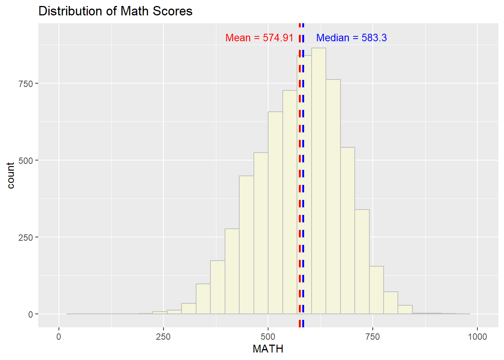
Code
mean_reading <- mean(stu_qqq_SG_final$READING, na.rm = TRUE)
median_reading <- median(stu_qqq_SG_final$READING, na.rm = TRUE)
ggplot(stu_qqq_SG_final, aes(x = READING)) +
geom_histogram(bins = 30, fill = "pink", color = "grey") +
scale_x_continuous(limits = c(0, 1000)) +
labs(title ="Distribution of Reading Scores", y="count") +
geom_vline(xintercept = mean_reading,
color = "red",
linetype = "dashed",
size = 1) +
annotate("text", x = 400, y = 900,
label = paste("Mean =", round(mean_reading, 2)),
color = "red",
size = 3.5)+
geom_vline(xintercept = median_reading,
color = "blue",
linetype = "dashed",
size = 1) +
annotate("text", x = 700, y = 900,
label = paste("Median =", round(median_reading, 2)),
color = "blue",
size = 3.5)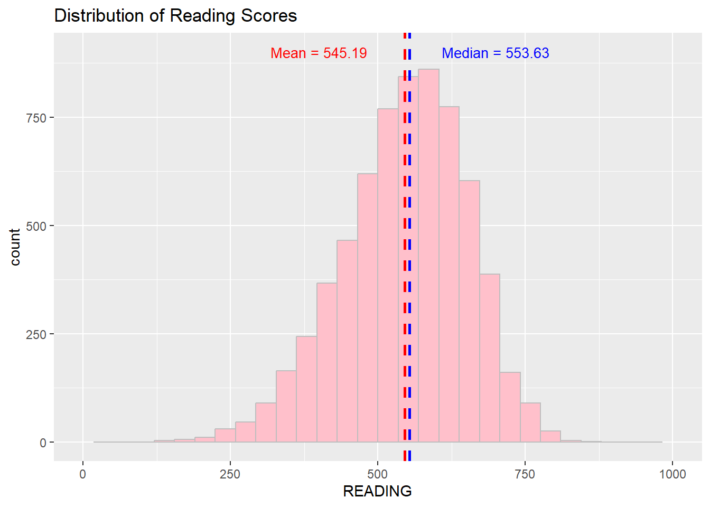
Code
mean_science <- mean(stu_qqq_SG_final$SCIENCE, na.rm = TRUE)
median_science <- median(stu_qqq_SG_final$SCIENCE, na.rm = TRUE)
ggplot(stu_qqq_SG_final, aes(x = SCIENCE)) +
geom_histogram(bins = 30, fill = "lightblue", color = "grey") +
scale_x_continuous(limits = c(0, 1000)) +
labs(title = "Distribution of Science Scores", y = "Count") +
geom_vline(xintercept = mean_science,
color = "red",
linetype = "dashed",
size = 1) +
annotate("text", x = 480, y = 900,
label = paste("Mean =", round(mean_science, 2)),
color = "red",
size = 3.5) +
geom_vline(xintercept = median_science,
color = "blue",
linetype = "dashed",
size = 1) +
annotate("text", x = 700, y = 900,
label = paste("Median =", round(median_science, 2)),
color = "blue",
size = 3.5)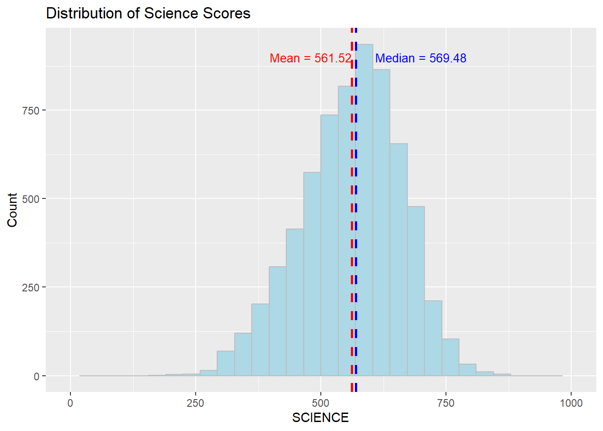
Note
The distribution among maths, science, and reading appear to be quite similar.
However, when comparing all three subjects, maths has the highest values for both mean and median, while reading has the lowest mean and median scores.
5.2 Performance and Gender
To find some insights between the performance of each subjects and gender, we will use density graph.
Code
p1 <- ggplot(data=stu_qqq_SG_final,
aes(x = MATH,
color=GENDER,
fill=GENDER)) +
geom_density(linewidth = 0.05, alpha=0.6)+
scale_fill_manual(values = c("#AB1858", "white")) +
scale_color_manual(values = c("#AB1858", "grey"))+
scale_x_continuous(limits = c(0, 1000))
p2 <- ggplot(data=stu_qqq_SG_final,
aes(x = READING,
color=GENDER,
fill=GENDER)) +
geom_density(linewidth = 0.05, alpha=0.6)+
scale_fill_manual(values = c("#AB1858", "white")) +
scale_color_manual(values = c("#AB1858", "grey"))+
scale_x_continuous(limits = c(0, 1000))
p3 <- ggplot(data=stu_qqq_SG_final,
aes(x = SCIENCE,
color=GENDER,
fill=GENDER)) +
geom_density(linewidth = 0.05, alpha=0.6)+
scale_fill_manual(values = c("#AB1858", "white")) +
scale_color_manual(values = c("#AB1858", "grey"))+
scale_x_continuous(limits = c(0, 1000))
(p1/p2/p3)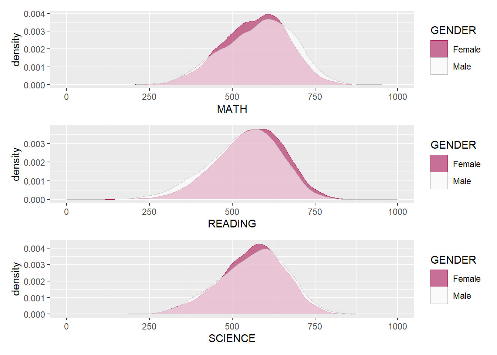
5.3 Performance and Type of Schools
In this section, we will use density graph and boxplots to find insights related to performance and type of schools
Code
ggplot(data=stu_qqq_SG_final,
aes(y = MATH, x=SCHOOL,fill=SCHOOL)) +
geom_boxplot()+
scale_y_continuous(limits = c(0, 1000))+
theme(legend.position = "none")+
stat_summary(geom = "point",
fun.y="mean",
colour ="black",
size=2)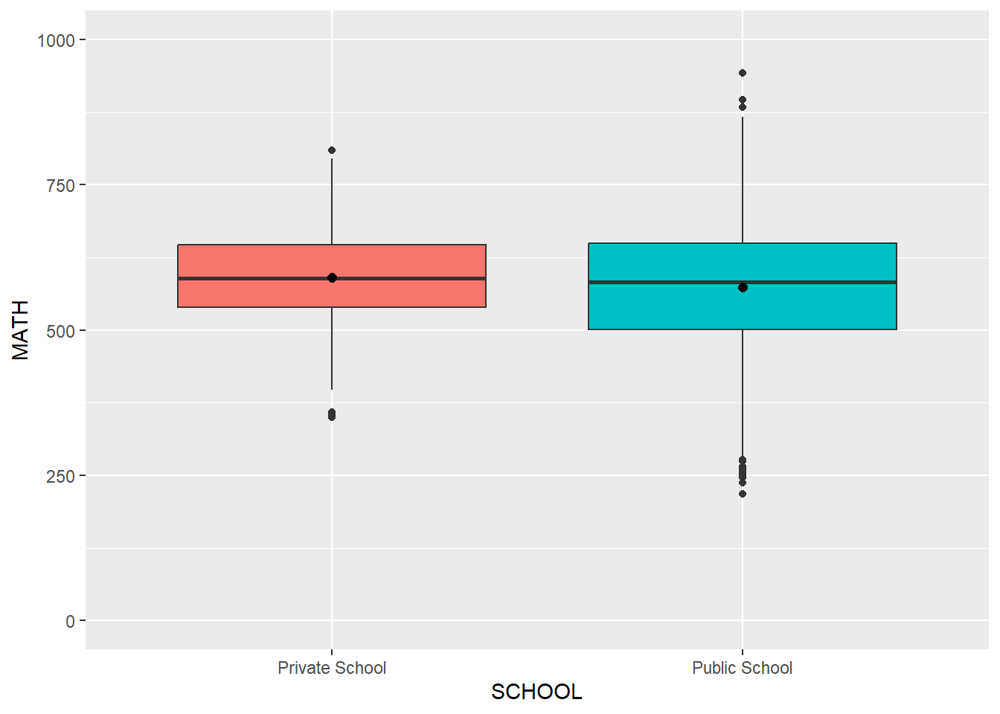
Code
ggplot(data=stu_qqq_SG_final,
aes(x = MATH,
color=SCHOOL,
fill=SCHOOL)) +
geom_density(linewidth = 0.05, alpha=0.6)+
scale_fill_manual(values = c("#67B5F3", "white")) +
scale_color_manual(values = c("#67B5F3", "grey"))+
scale_x_continuous(limits = c(0, 1000))+
theme(legend.position = c(0.85, 0.85))+
labs(title = "Distribution of Math Scores across Different School Types")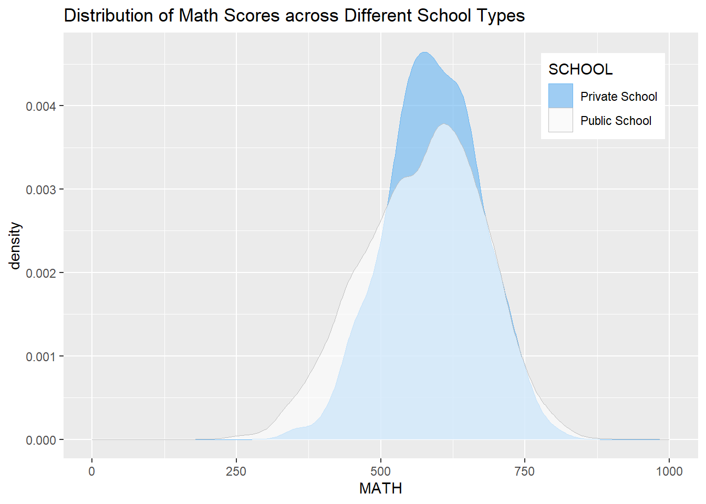
Code
ggplot(data=stu_qqq_SG_final,
aes(y = READING, x=SCHOOL,fill=SCHOOL)) +
geom_boxplot()+
scale_y_continuous(limits = c(0, 1000))+
theme(legend.position = "none")+
stat_summary(geom = "point",
fun.y="mean",
colour ="black",
size=2)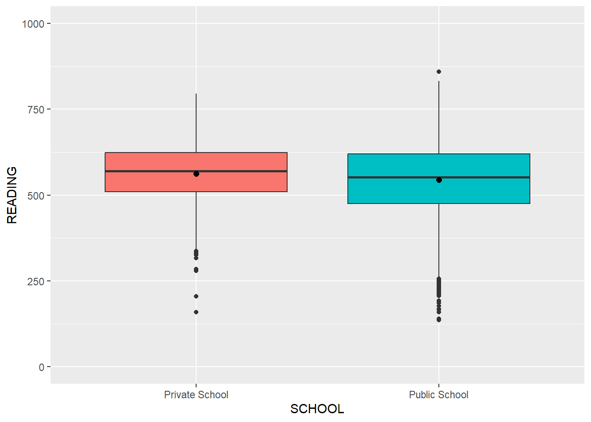
Code
ggplot(data=stu_qqq_SG_final,
aes(x = READING,
color=SCHOOL,
fill=SCHOOL)) +
geom_density(linewidth = 0.05, alpha=0.6)+
scale_fill_manual(values = c("#67B5F3", "white")) +
scale_color_manual(values = c("#67B5F3", "grey"))+
scale_x_continuous(limits = c(0, 1000))+
theme(legend.position = c(0.85, 0.85))+
labs(title = "Distribution of Reading Scores across Different School Types")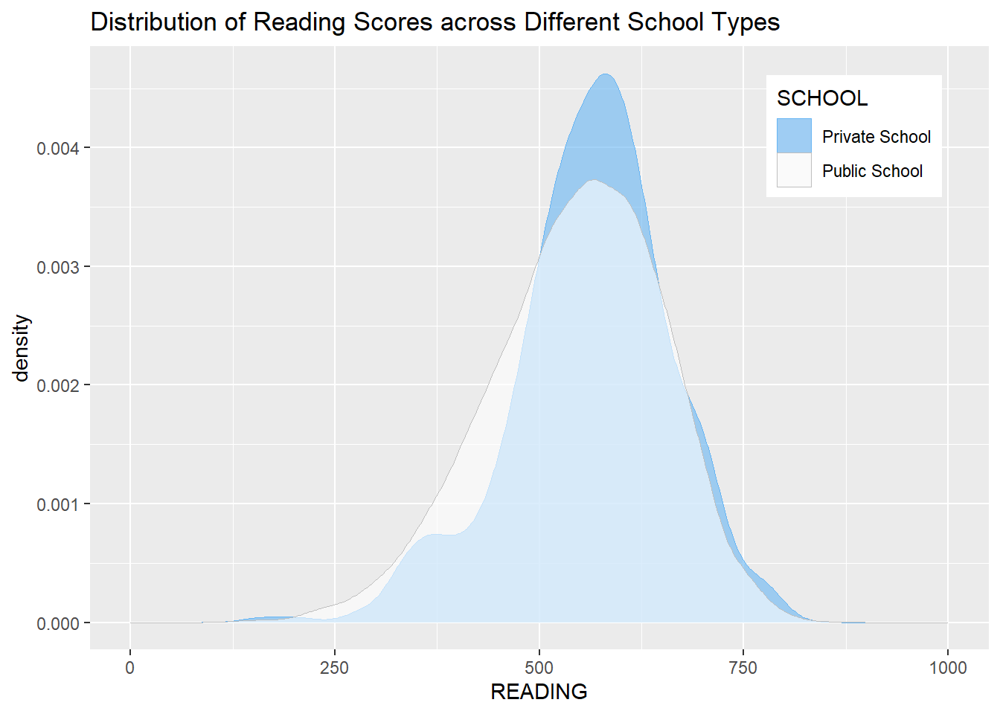
Code
ggplot(data=stu_qqq_SG_final,
aes(y = SCIENCE, x=SCHOOL,fill=SCHOOL)) +
geom_boxplot()+
scale_y_continuous(limits = c(0, 1000))+
theme(legend.position = "none")+
stat_summary(geom = "point",
fun.y="mean",
colour ="black",
size=2)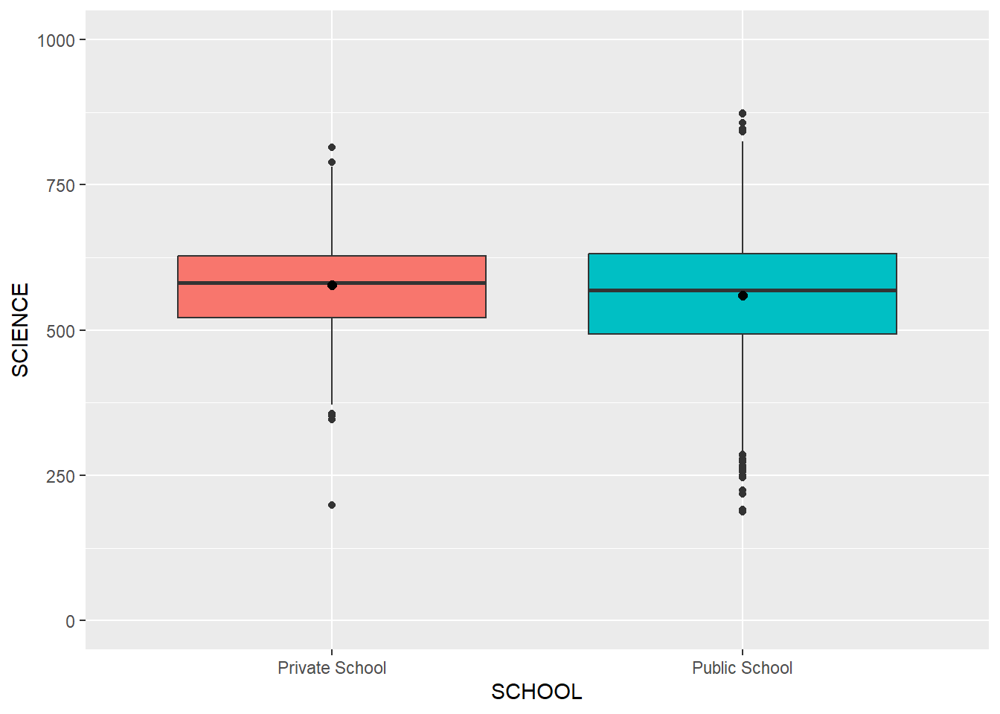
Code
ggplot(data=stu_qqq_SG_final,
aes(x = SCIENCE,
color=SCHOOL,
fill=SCHOOL)) +
geom_density(linewidth = 0.05, alpha=0.6)+
scale_fill_manual(values = c("#67B5F3", "white")) +
scale_color_manual(values = c("#67B5F3", "grey"))+
scale_x_continuous(limits = c(0, 1000))+
theme(legend.position = c(0.85, 0.85))+
labs(title = "Distribution of Science Scores across Different School Types")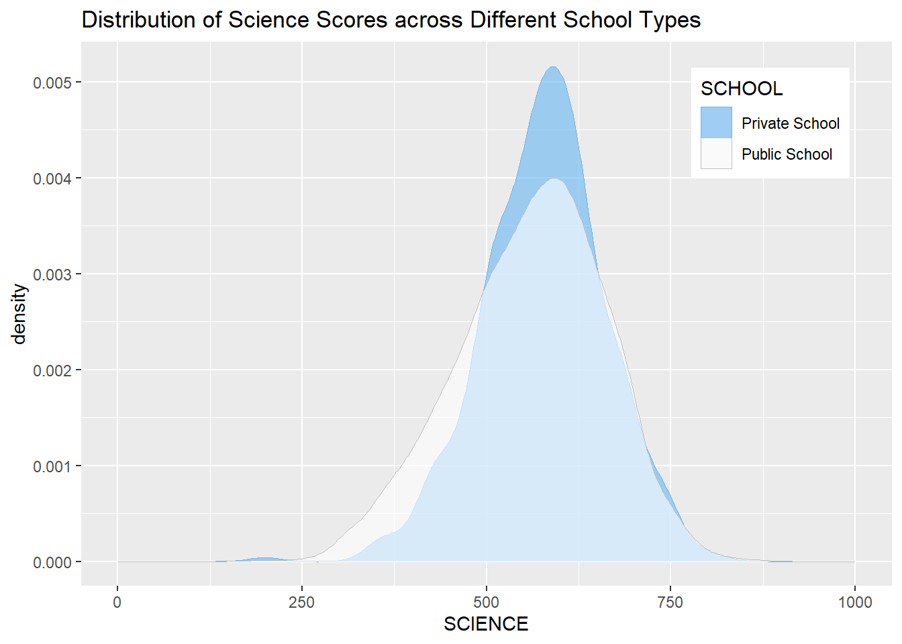
5.4 Performance and Socioeconomic Status
The boxplot and ridges graph will be used to identify the relationship between socioeconomic status and the performance on each subject
Code
ggplot(data=stu_qqq_SG_final,
aes(y = MATH, x=SOCIOECONOMIC_STATUS,fill=SOCIOECONOMIC_STATUS)) +
geom_boxplot(fill = "beige")+
scale_y_continuous(limits = c(0, 1000))+
stat_summary(geom = "point",
fun.y="mean",
colour ="black",
size=2)+
theme(legend.position = "none")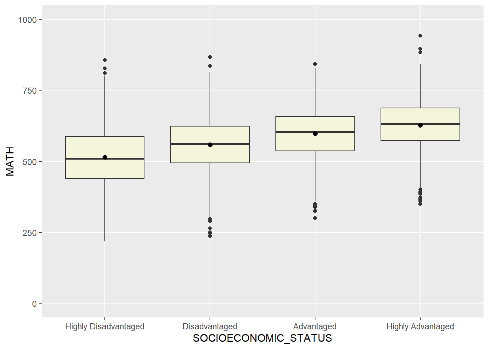
Code
ggplot(data = stu_qqq_SG_final,
aes(x = MATH, y = SOCIOECONOMIC_STATUS, fill = SOCIOECONOMIC_STATUS)) +
geom_density_ridges() +
scale_x_continuous(limits = c(0, 1000)) +
labs(title = "Distribution of Math Scores by Socioeconomic Status",
y = "Socioeconomic Status", x = "Math Score") +
theme_ridges()+
theme(legend.position = "none")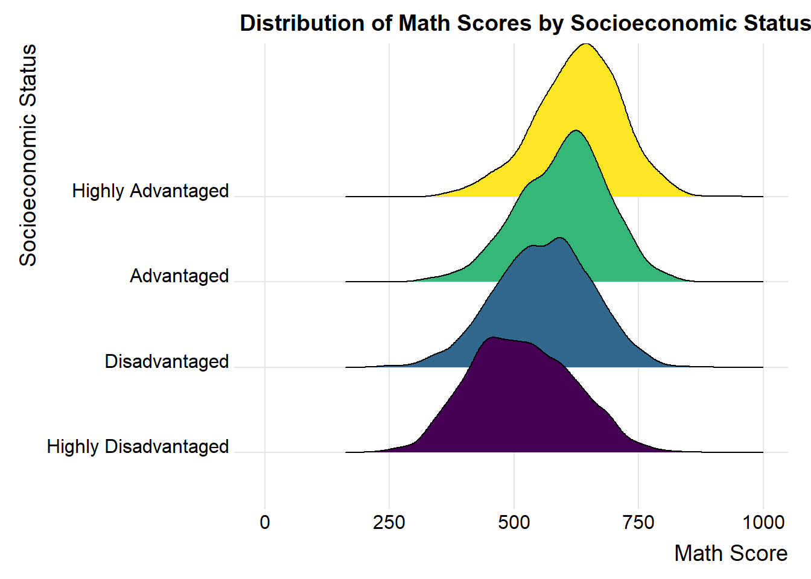
Code
ggplot(data=stu_qqq_SG_final,
aes(y = READING, x=SOCIOECONOMIC_STATUS,fill=SOCIOECONOMIC_STATUS)) +
geom_boxplot(fill="pink")+
scale_y_continuous(limits = c(0, 1000))+
stat_summary(geom = "point",
fun.y="mean",
colour ="black",
size=2)+
theme(legend.position = "none")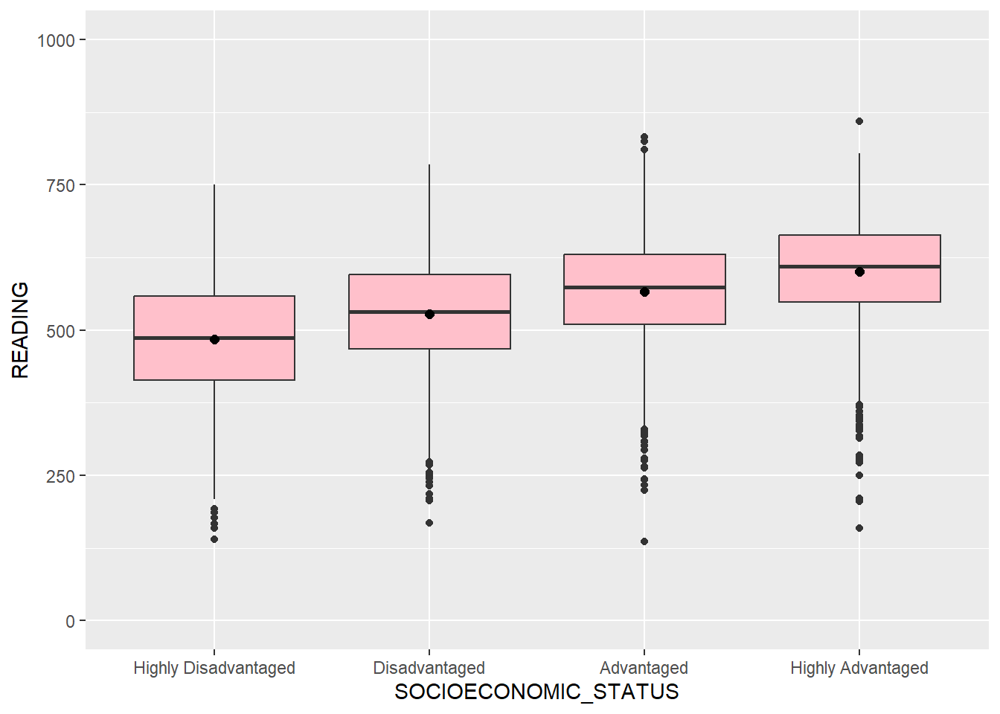
Code
ggplot(data = stu_qqq_SG_final,
aes(x = READING, y = SOCIOECONOMIC_STATUS, fill = SOCIOECONOMIC_STATUS)) +
geom_density_ridges() +
scale_x_continuous(limits = c(0, 1000)) +
labs(title = "Distribution of Reading Scores by Socioeconomic Status",
y = "Socioeconomic Status", x = "Reading Score") +
theme_ridges()+
theme(legend.position = "none")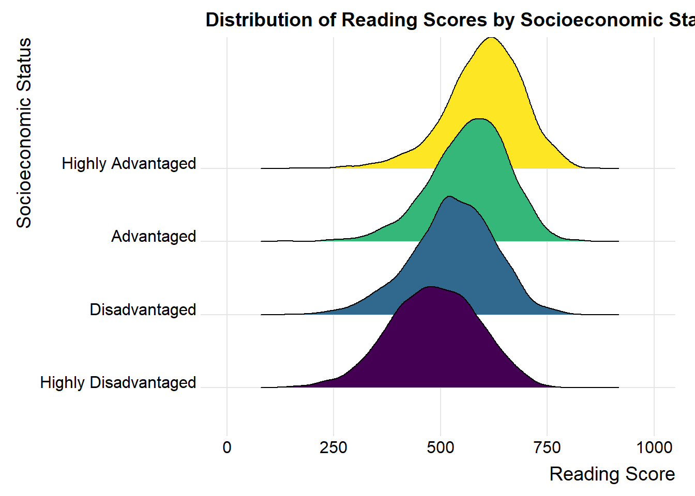
Code
ggplot(data=stu_qqq_SG_final,
aes(y = SCIENCE, x=SOCIOECONOMIC_STATUS,fill=SOCIOECONOMIC_STATUS)) +
geom_boxplot(fill="lightblue")+
scale_y_continuous(limits = c(0, 1000))+
stat_summary(geom = "point",
fun.y="mean",
colour ="black",
size=2)+
theme(legend.position = "none")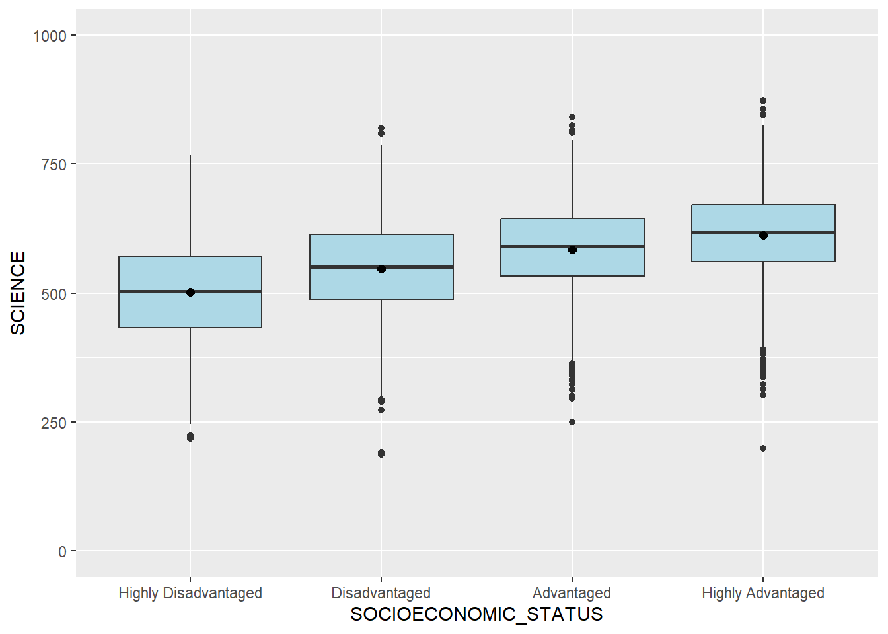
Code
ggplot(data = stu_qqq_SG_final,
aes(x = SCIENCE, y = SOCIOECONOMIC_STATUS, fill = SOCIOECONOMIC_STATUS)) +
geom_density_ridges() +
scale_x_continuous(limits = c(0, 1000)) +
labs(title = "Distribution of Science Scores by Socioeconomic Status",
y = "Socioeconomic Status", x = "Science Score") +
theme_ridges()+
theme(legend.position = "none")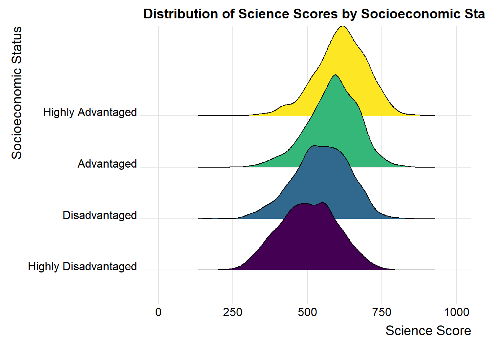
6 Conclusion
In summary,our analysis reveal some key findings. Across all three subjects, there is a similarity in score distributions. However, math consistently achieve the highest scores, while reading tends to have lowest. Additionally, female students tend to have around similar scores, while male students have greater score variability. While private schools tend to have slightly better average scores, public schools have a broader range of scores. This indicates that there is more variation in how well students in public schools perform. Lastly, the most observation is positive correlation between socioeconomic status and academic performance. Students from more advantaged backgrounds consistently achieve better scores.